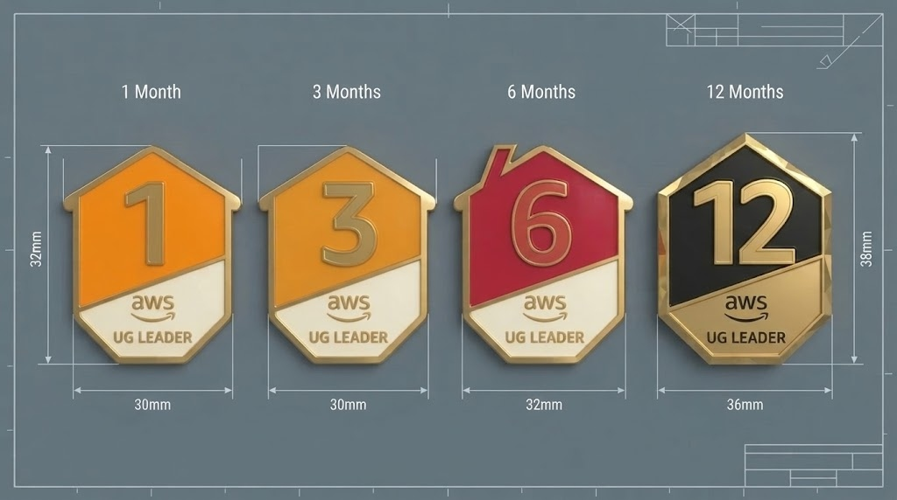
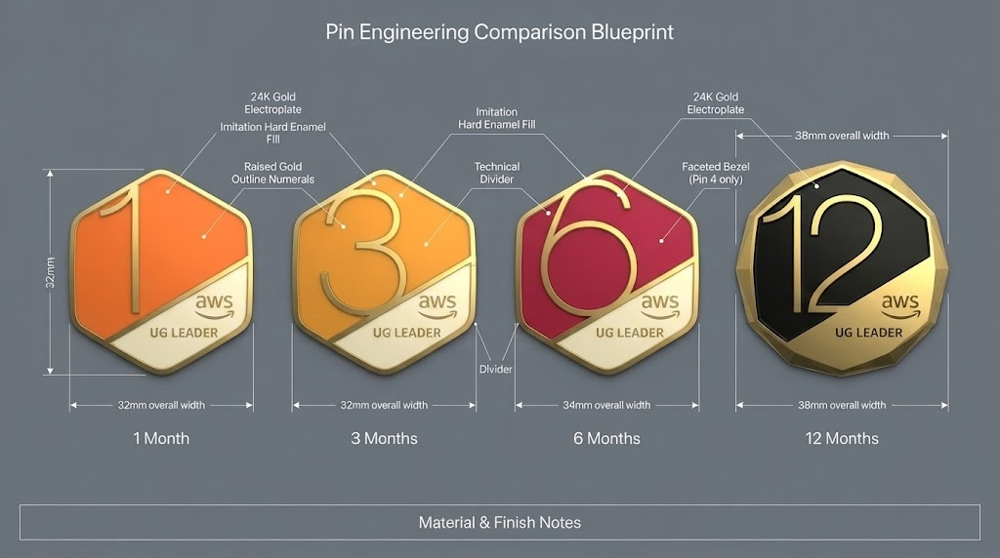
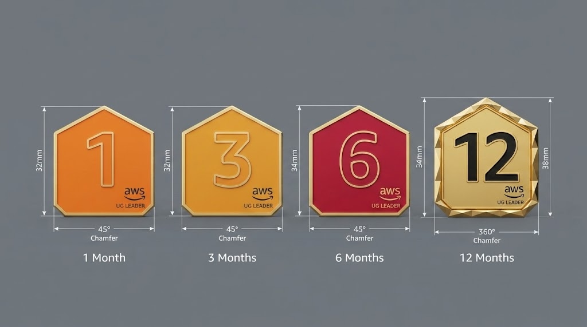

跳到内容
UG
AWS User Group
社区勋章设计档案
当前方案
方案档案
3D 样机
DESIGN ARCHIVE
方案档案
全部
精选
探索
参考
角色配色
原始参考 01
参考
原始参考 02
参考
原始参考 03
参考
原始参考 04
参考
原始参考 05
参考
原始参考 06
参考
原始参考 07
参考
原始参考 08
参考
原始参考 09
参考
原始参考 10
参考
变体1 · 无旗帜极简款
探索
变体2A · 30天计时款
探索
变体2B · 360天年度巅峰款
探索
变体3 · 半圆底水平分割款
探索
创新星芒灯塔
探索
代码尖括号与Git分支
探索
微服务模块积木
探索
展翅羽翼
探索
荣耀月桂
探索
开源共筑篝火
探索
分布式拓扑节点
探索
数字超级符号 · 1至12月五阶全套演进总图
精选
时间圆环 · 1至12月五阶全套演进总图
精选
IP材质 · 1至12月五阶全套演进总图
精选
66号公路 · 风霜真金五阶演进总图
精选
极客骰子 · 五阶全套演进总图
精选

数字超级符号 · 1至12月全阶小房子演进矩阵
探索

数字超级符号 · 1至12月超大触边演进矩阵
探索
数字超级符号 · 全阶抽象小房子演进矩阵
探索

数字风格 · 1至12月全阶同系演进矩阵
探索
篝火 · 1至12月全阶演进总图
精选
UG Leader · 活力橙
UG Leader
UG Speaker · 森林绿
UG Speaker
UG Speaker · 鼠尾草绿
UG Speaker
UG Speaker · 祖母绿
UG Speaker
UG Volunteer · 科技紫
UG Volunteer
UG Volunteer · 烟熏紫
UG Volunteer
UG Volunteer · 波尔多紫
UG Volunteer
没有匹配的方案